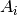
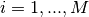
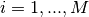
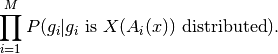
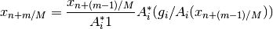
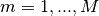
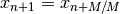

osmlem¶
-
odl.solvers.iterative.statistical.osmlem(op, x, data, niter, noise='poisson', callback=None, **kwargs)[source]¶ Ordered Subsets Maximum Likelihood Expectation Maximation algorithm.
This solver attempts to solve:
max_x L(x | data)
where
L(x, | data)is the likelihood ofxgivendata. The likelihood depends on the forward operatorsop[0], ..., op[n-1]such that (approximately):op[i](x) = data[i]
where the precise form of approximately is determined by
noise.Parameters: - op : sequence of
Operator Forward operators in the inverse problem.
- x :
op.domainelement Vector to which the result is written. Its initial value is used as starting point of the iteration, and its values are updated in each iteration step.
- data : sequence of
op.rangeelement-like Right-hand sides of the equation defining the inverse problem.
- niter : int
Number of iterations.
- noise : {‘poisson’}, optional
Noise model determining the variant of MLEM. For
'poisson', the initial value ofxshould be non-negative.- callback : callable, optional
Function called with the current iterate after each iteration.
Other Parameters: - sensitivities : float or
op.domainelement-like, optional Usable with
noise='poisson'. The algorithm contains anA^T 1term, if this parameter is given, it is replaced by it. Default:op[i].adjoint(op[i].range.one())
See also
mlem- Ordinary MLEM algorithm without subsets.
loglikelihood- Function for calculating the logarithm of the likelihood
Notes
Given a forward models , data
 , 
and noise model
, 
and noise model  , the algorithm attempts find an
, the algorithm attempts find an  that
maximizes:
that
maximizes:
With ‘poisson’ noise the algorithm is given by partial updates:

for  and .
The algorithm is not guaranteed to converge, but works for many practical problems.
References
Natterer, F. Mathematical Methods in Image Reconstruction, section 5.3.2.
- op : sequence of